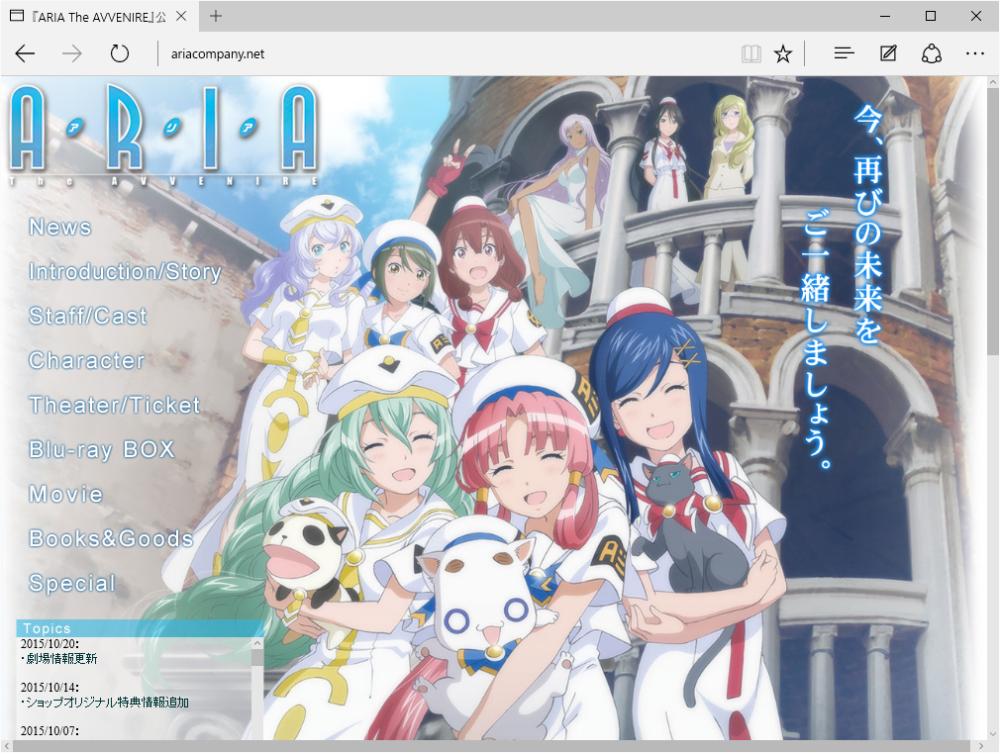

『ARIA The AVVENIRE』はミラクルでできているのかも……
公開日：

10月17日土曜日、前日からの体調不良で寝込んでいたが、午後三時に小康を取り戻した。今日は待ちに待った『ARIA The AVVENIRE』が愛媛・松山にくる日。
初演こそ逃したが、この日の最終上演には十分間に合いそうだったので、のそのそと布団からよろばいでて、斎戒沐浴の上、ちんちん電車に乗って大街道へ向かった。
ちんちん電車はいつ乗ってもいいものだ
— だるだるぐらし リピート (@daruyanagi) 2015, 10月 17シネマサンシャイン 大街道は初めて行ったが、割と狭い感じだった。むかし当時小学生だった弟2号におねだりされて、道頓堀だか千日前だかの映画館へエヴァンゲリオンを観に行ったのをふと思い出す。あそこも受付を済ませたあと、エレベーターで他の階にある劇場へ行く感じだったような記憶があるようなないような。
また 逢える 奇跡に…… pic.twitter.com/R4rFdhXeYl
— だるだるぐらし リピート (@daruyanagi) 2015, 10月 17当日券を買うと、特典のミニ色紙がもらえた。ちょっとうれしい。あとで調べたところによると、このミニ色紙には3パターンあって、2週目は姫屋バージョン、3週目はオレンジプラネットバージョンが配られるのだそうだ。わしはどっちかっていうと姫屋が一番好きなので、2週目に観に行けばよかったかもしれない。
ちっせえｗｗｗ pic.twitter.com/D9jG1Mfnbu
— だるだるぐらし リピート (@daruyanagi) 2015, 10月 17劇場はめちゃ狭い。映画を見に行くなら、衣山で正解のようだ。
周りを見渡すと、客は20代ぐらいの男性がほとんどだった。女性はいない（男性のつがいは何組かいた）。みんな似たような格好で、“おとなしいヲタク”を絵に描いたようだ。
ARIA 観に来てるの俺みたいな雰囲気のやつばっかりで安心感ある（＾ν＾）
— だるだるぐらし リピート (@daruyanagi) 2015, 10月 17しかし、初日に観にくるとは、相当の ARIA ファンに違いない。そう思うと、名も知らぬ・言葉も交わしたことのない同志に淡いシンパシーを感じる。
この劇場で 互いに名前も知らないヲタクたちと 想いを一つに同じ作品を観る……これって奇跡ですよね
— だるだるぐらし リピート (@daruyanagi) 2015, 10月 17売店でプレミアムモルツとフライドポテトを買って、準備万端。
ぽてビール完備 pic.twitter.com/RHI7jYX7nH
— だるだるぐらし リピート (@daruyanagi) 2015, 10月 17ソフトドリンクとフライドポテトのセットはあるのに、ビールのセットがないのは、ビールを飲むようなブルジョワには割引は必要ないという映画館側の判断なのだろう。正直、わしも同意する。
はじまた（＾ν＾）
— だるだるぐらし リピート (@daruyanagi) 2015, 10月 17上映が始まると同時に、ほおが緩むのを感じる。映画館が暗いことに、生まれて初めて感謝した。
――家からもってきた今治のハンドタオルで口を覆う。
わしの中で晃さんの評価が300%アップする。
――家からもってきた今治のハンドタオルで鼻を覆う。
アテナさんの歌声は反則だと思う。
――家からもってきた今治のハンドタオルで目を覆う。
古いエピソードはさむのは、反則やろ。涙腺と金的への直接打撃は日本国憲法で禁じられているはずだ。
なにもかもがみらくるなさくひんだった
— だるだるぐらし リピート (@daruyanagi) 2015, 10月 17作品をみるまでは「対ヲタク用最終決戦兵器アイちゃんが無双するだけやろ」とタカをくくっていたが、ところがどっこい。むしろ第一世代、第二世代の魅力がいい感じに引き出せていたように思う。むしろ第三世代の影が薄いぐらい。アイちゃん、あずさ、アーニャだけのエピソードもまた作ってほしいと思ったけど……もう終わりなのかなぁ、残念だ。
年末発売予定の Bru-ray BOX はほしいが、姪っ子・甥っ子にお年玉をやらなければならないので、10万円弱の出費はちょっと厳しい。その代わりというわけではないが、Amazon で原作の ARIA 完全版を予約した。届くのが楽しみだ。
")
ARIA 完全版 ARIA The MASTERPIECE 1 (BLADE COMICS)
- 作者: 天野こずえ
- 出版社/メーカー: マッグガーデン
- 発売日: 2015/11/10
- メディア: コミック
- この商品を含むブログを見る
追伸
600円しないのいいなぁ pic.twitter.com/uK1dbzGFN8
— だるだるぐらし リピート (@daruyanagi) 2015, 10月 17帰りに本町六丁目で中華でも食べようかと思ったのだけど、なんか入りづらい（閉店間際だったのかな？ なんか掃除中だったので。閉店時間書いてないから、9時過ぎの入店は遠慮してまう）ので他の店を探していたら、ちょっと道に迷ってしまった。すると、いい感じの洋食屋さんを発見。リーズナブルで美味しく、店の人も優しそうなオーラ全開でとても居心地がよかった。
ARIA を観たあとだと、こういうことが全部ミラクルに見えてしまいますよね？
I'm at まるちゃん in 松山市木屋町, 愛媛県 https://t.co/QFuFM96kyW
— だるだるぐらし リピート (@daruyanagi) 2015, 10月 17